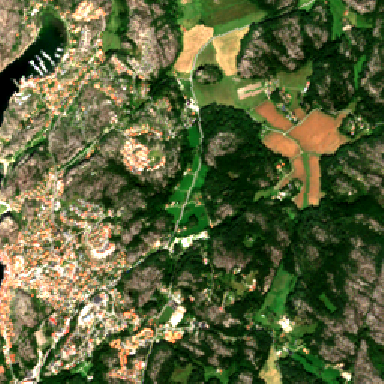
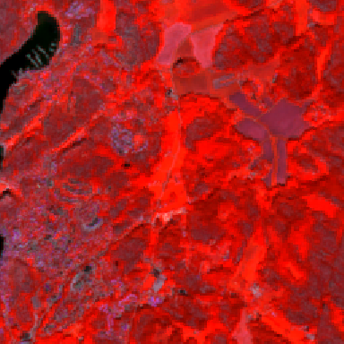
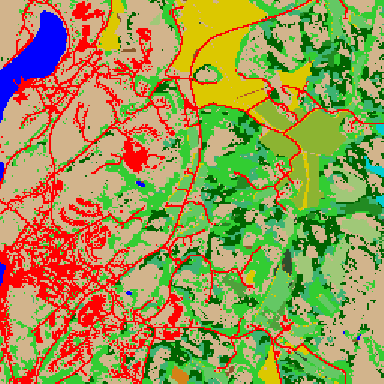
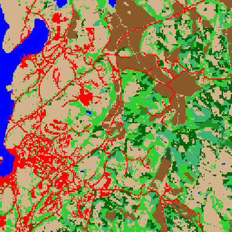
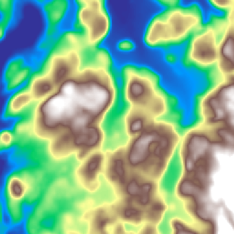
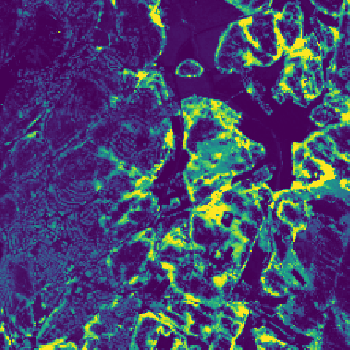
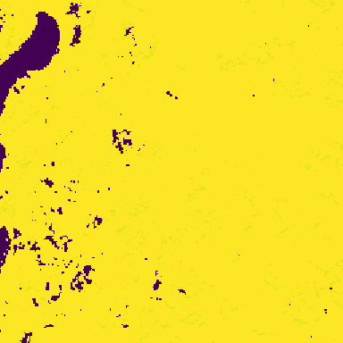
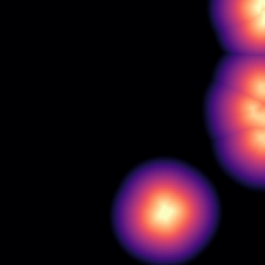
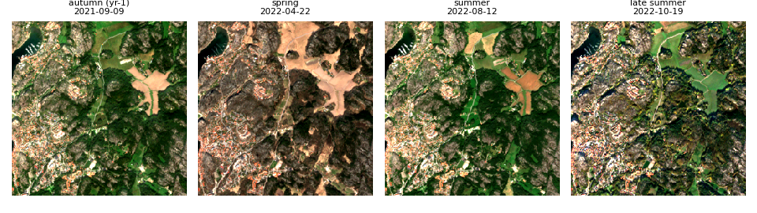
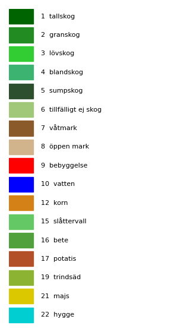

At a glance
- 8290tiles (.npz)
- ~168 GBtotal
- 256×256px
- 10 mGSD
- 2560 mextent
- EPSG:3006SWEREF99 TM
- v5schema
Visual examples
One representative tile
(43983928). RGB & NIR-CIR use the standard viz
parameters (B04/B03/B02 and B8A/B03/B04, 2–98% stretch).








Multitemporal — 4 frames
Frame 0 = autumn of year−1 (stubble / winter crops); frames 1–3 = VPP-phenology-guided growing-season windows. Band order B02,B03,B04,B8A,B11,B12.

Label legend

Label schema (23 classes)
| id | name | source | id | name | source |
|---|---|---|---|---|---|
| 0 | bakgrund | — | 12 | korn | LPIS |
| 1 | tallskog | NMD | 13 | havre | LPIS |
| 2 | granskog | NMD | 14 | oljeväxter | LPIS |
| 3 | lövskog | NMD | 15 | slåttervall | LPIS |
| 4 | blandskog | NMD | 16 | bete | LPIS |
| 5 | sumpskog | NMD | 17 | potatis | LPIS |
| 6 | tillfälligt ej skog | NMD | 18 | sockerbetor | LPIS |
| 7 | våtmark | NMD | 19 | trindsäd | LPIS |
| 8 | öppen mark | NMD | 20 | råg | LPIS |
| 9 | bebyggelse | NMD | 21 | majs | LPIS |
| 10 | vatten | NMD | 22 | hygge | SKS |
| 11 | vete | LPIS |
Download
Listing (basic-auth): https://dataset-256.icedc.se/unified_v2/ ·
schema: metadata.json ·
resumable bulk download via scripts/download_unified_256.sh.
Each .npz: spectral (24,256,256) float32 +
label (256,256) uint8 + aux stack — full field list in
metadata.json.
⚠️ Temporary ICE-hosted mirror (~48 h window). Derived from open data (Sentinel-2, NMD, LPIS/SJV, SKS, SLU, Copernicus DEM); redistribution subject to source licenses.